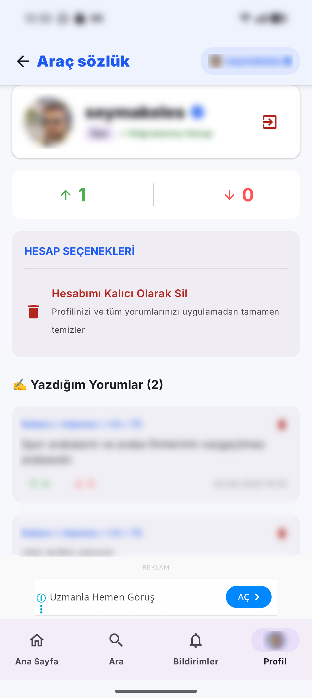
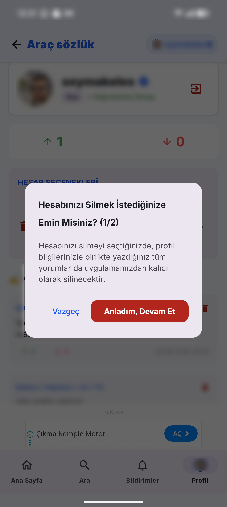
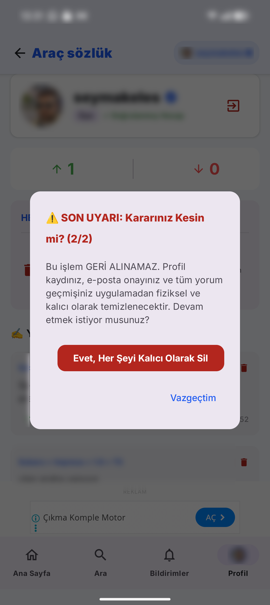

Araç Sözlük kullanıcıları hesaplarını silmek için aşağıdaki yöntemlerden birini kullanabilir.
Uygulamadaki profil bölümüne giriş yapınız. Profil bölümünde bulunan "Hesabımı kalıcı olarak sil" butonuna basınız.

"Hesabımı kalıcı olarak sil" butonu ile açılan ekranda "Anladım, Devam Et" seçeneğini seçiniz.

Daha sonra "Evet, Her şeyi kalıcı olarak sil" seçeneğine tıklayınız. Bu işlemden sonra hesabınız ve tüm verileriniz kalıcı olarak silinecektir.

Diğer bir seçenek olarak uygulamada kayıtlı e-posta adresinizden aşağıdaki adrese talep gönderebilirsiniz:
Mail metni şu şekilde olmalıdır:
Ekiplerimiz mail adresinizi doğruladıktan sonra, talebiniz üzerine hesabınızı ve ilgili verileri silecektir.